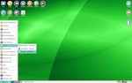
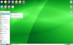
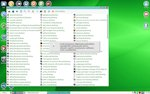
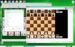
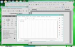
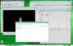
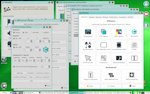
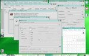

FinPuppy 2.3 (Fossapup64 9.5)
Kuvat aukeavat isompina uuteen välilehteen.
Päävalikko on tarkoituksella staattinen. Vain Suosikit osioon voi lisätä uusia kohteita.



Kymmenittäin korttipelejä, shakki ja pulmapelejä.

Toimisto-ohjelmia, sovelluksia mediatiedostojen katseluun/kuunteluun/muokkaamiseen.


Useita sovelluksia asetusten säätöön, suurin osa säädöistä löytyy JWMDesk ohjelmasta.
Apuohjelmia, työkaluja moneen lähtöön.

